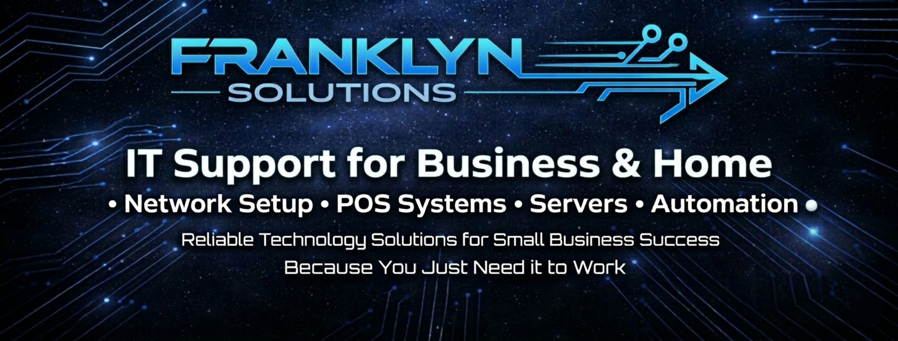
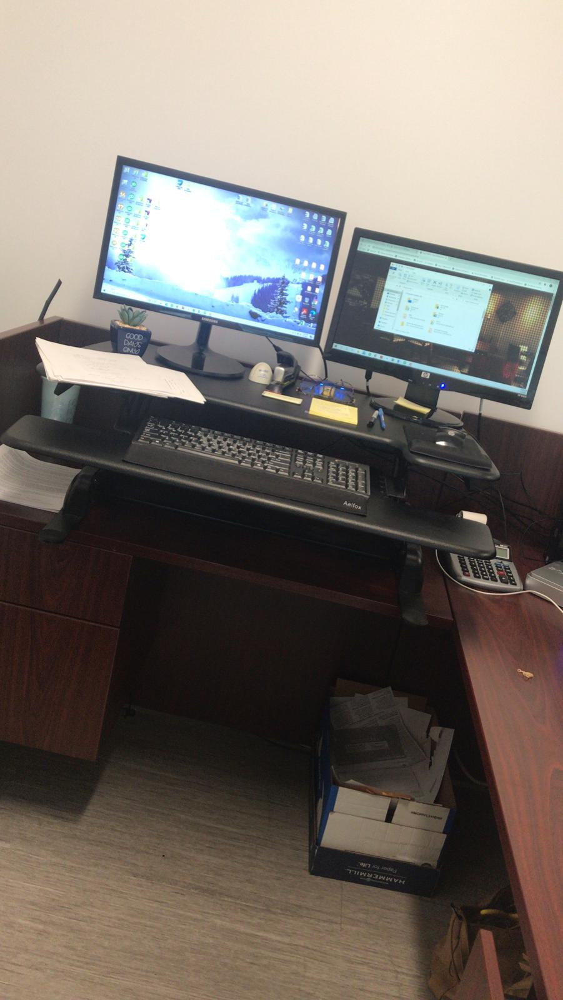
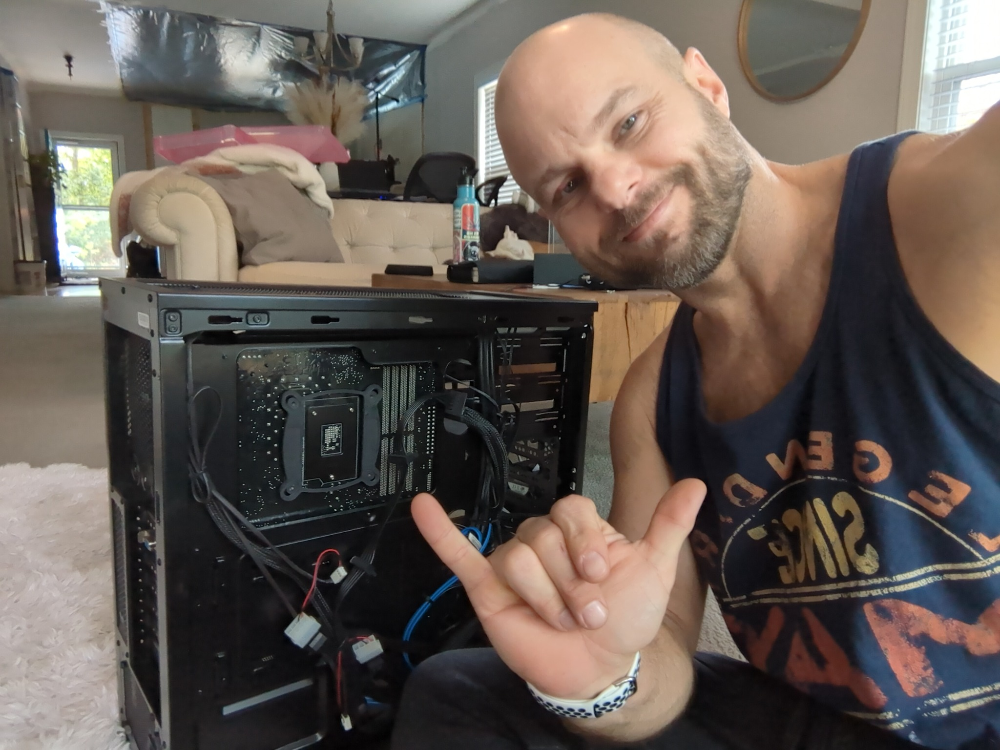
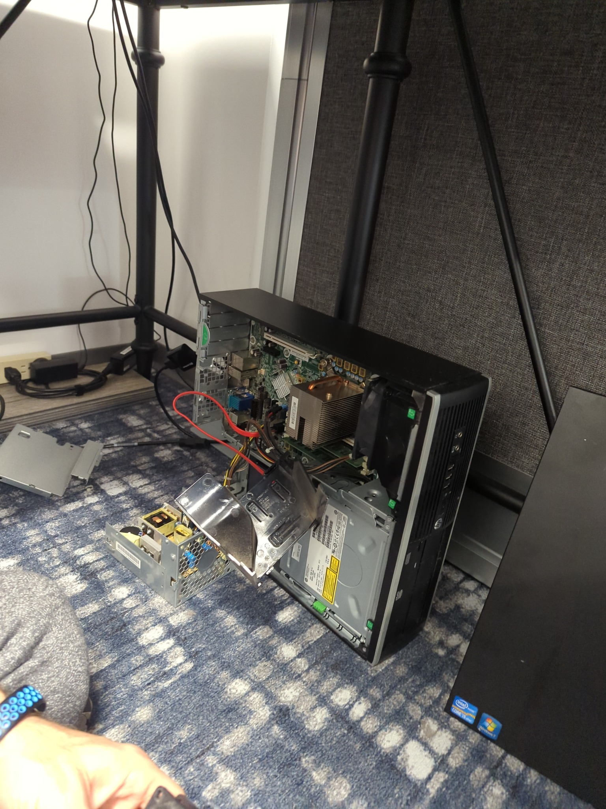
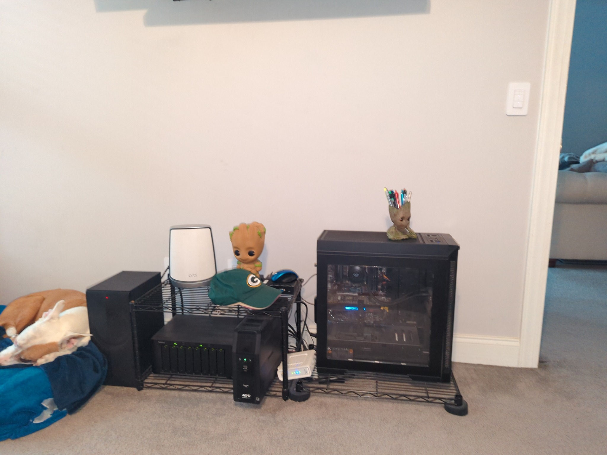
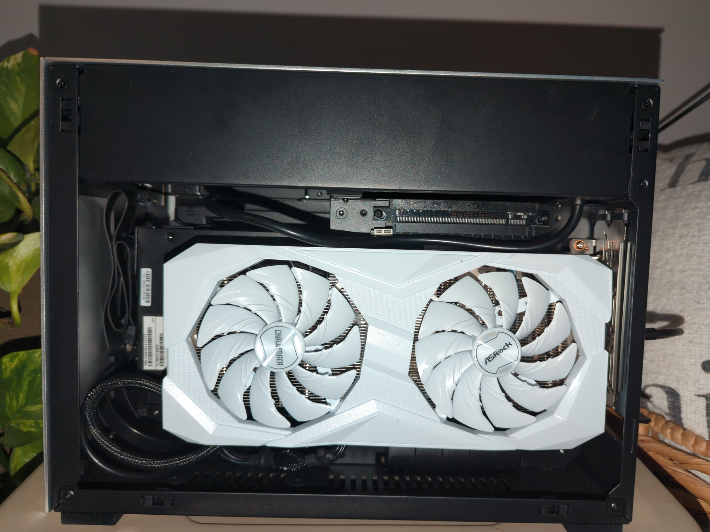
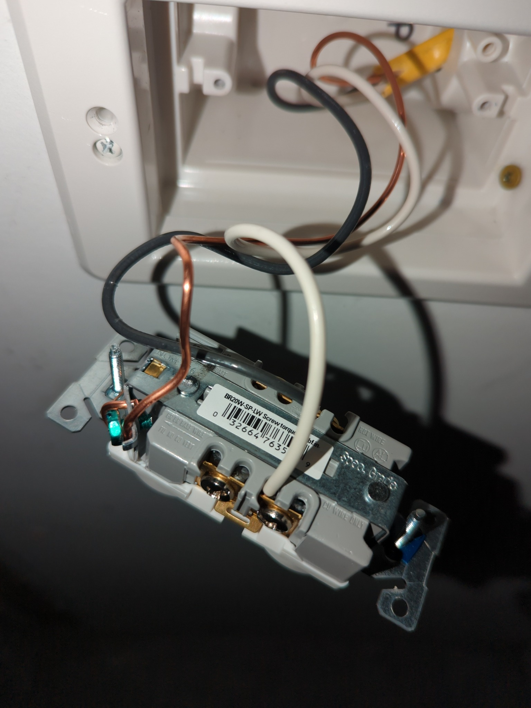

Infrastructure & networking
Core systems built to stay stable and scale cleanly.
Network design, Wi‑Fi, servers, storage, VPN, equipment planning, performance tuning, and practical infrastructure consulting.
IT infrastructure • networking • websites • automation
Franklyn Solutions delivers hands-on technology work across hardware, networking, websites, DNS, Cloudflare, registration systems, automation, upgrades, troubleshooting, and long-term support. The focus is practical: build it correctly, keep it stable, and make it easier to manage over time.
Core services
Franklyn Solutions supports homes, businesses, and evolving digital operations with a mix of hands-on repair, infrastructure work, clean deployment, and practical long-term support.
Infrastructure & networking
Network design, Wi‑Fi, servers, storage, VPN, equipment planning, performance tuning, and practical infrastructure consulting.

Business & home support
Desktop and laptop repair, upgrades, device rollout, smart home integration, office setups, AV, cameras, and troubleshooting.

Websites & cloud systems
Website modernization, domain and DNS work, Cloudflare setup, GitHub + Pages workflows, and ongoing technical site updates.

Registration & automation
Registration platforms, payment workflow coordination, forms and waivers, content scheduling systems, and AI-assisted automation planning.
Digital infrastructure & online systems
The value is not just making something look good. It is knowing how to connect domains, hosting, platforms, payments, and workflow pieces so the system actually runs cleanly after launch.
Websites, DNS & Cloudflare
Static sites, GitHub-based workflows, Cloudflare Pages, DNS records, domain cutovers, and the technical cleanup that makes launches behave correctly.
Registration, payments & client portals
Event registration systems, payment coordination, forms, waivers, attendee workflows, and clean admin setup for organizers that need something dependable.
Automation, content & publishing systems
Centralized social publishing, asset organization, AI-assisted content workflows, and operational automation designed around the way a small business actually runs.
What Franklyn Solutions can handle
Franklyn Solutions works best when the physical tech, the network, the website, and the business workflow all need to connect cleanly.
Featured work
The strongest version of the site shows range: high-performance systems, support work, web deployment, registration platforms, and the connected workflows that keep business operations moving.

Infrastructure project
Servers, storage, custom builds, rack-style hardware, upgrades, cleanup, and deeper technical work that proves the infrastructure side is real.
Website deployment
Fast static-site publishing with editable source files, DNS control, cleaner launches, and easy iteration for future updates.
Registration platform
Event pages, waivers, attendee flow, backend setup, and payment coordination presented as a business platform service.
Centralized content operations
Cross-platform scheduling, organized posting workflows, and AI-assisted automation as a connected operations offering.




Project snapshots
These cards give the site more depth without making it feel cluttered, and they can be rotated or expanded easily in later revisions.

Hands-on hardware work, upgrades, and performance-focused system builds.

Desktop diagnosis, parts replacement, cleanup, and practical repair work.

Internal hardware evaluation, upgrades, and deeper technical service.

Networked devices, rack-style setups, and scalable hardware planning.

Finished deployments that still fit the more polished visual tone of the site.

Structured cable work, hardware integration, and the behind-the-scenes setup.
Why Franklyn Solutions
Franklyn Solutions is locally owned, veteran owned, and built around real hands-on experience across small business IT, residential tech, networking, infrastructure, hardware repair, websites, DNS, deployment workflows, and ongoing support. The common thread is simple: understand the problem, design the right fix, and implement it in a way that holds up.
From one-off troubleshooting to larger systems work, the goal stays the same: give clients one technical partner who can handle the parts that usually get split across multiple vendors.
Client feedback
“Wonderful service. Friendly, extremely knowledgeable, and not afraid to help with all the little things too.”
Jacqueline Tracy, Ph.D.“They took all the guesswork out of researching, purchasing, and configuring the equipment. Business is running smooth again.”
Jay Pease, JPEG LLC“Fast, reliable, and efficient. Their service is stellar and they are my go-to for technology needs.”
Fritz Brenner, Two Sails Marketing LLCContact
Whether it is a network problem, a server build, a website refresh, a registration platform, device support, or a broader technology cleanup, Franklyn Solutions can help map out the next step and get the work moving.